LLMOps and AI governance dashboard
Internal dashboard that tracks every use of a language model in the company, service by service: how many calls, how many errors and of which kind, how long they take, how much GPU and quota they use, what went into and came out of each model, and what risks each integration carries. It is also the governance screen for the agent that serves the company through Teams and for the routine in which an agent fixes Airflow failures on its own.
- 11instrumented services, from DAGs to applications
- 6providers measured, local models and APIs
- 9screens, from usage and infrastructure to agent evaluation
- ~1 msof telemetry overhead per call
Why it exists
Each service called its own model, from local models served by Ollama to APIs such as Groq, Claude, Gemini and Mistral, and the only trace was each service's log. Simple questions had no answer: which service uses the GPU the most, how many times a key hit its quota, whether a classification got slower, what exactly was sent to an external provider. The dashboard brings it all into one place without asking services to change their architecture: wrapping the model call in a function from the telemetry library is enough.
Collection
PER CALL
EXISTING SOURCES

The telemetry library is a single Python file using only the standard library, with a Node mirror for the one service that is not Python. A context manager wraps the call and records service, task, provider, model, the name of the key used (never the secret), status, duration, time to first token, input and output tokens, remaining quota read from the rate-limit headers and, inside Airflow, the run and the task. Exceptions are classified into types such as tokens-per-minute or per-day limit, invalid key, timeout, 5xx error and out of memory, recorded and re-raised without changing the service's behaviour.
Records are sent in batches from a separate thread, so the service never waits for the dashboard, and if the dashboard is down the record is dropped and the service carries on. Metaprompt, input and response are stored truncated, masked twice, in the library and at ingestion, for tax IDs, e-mail, phone and secrets, and deleted after fourteen days. Each service carries a literal copy of the library, because each build only sees its own folder, and a sync script flags any copy that drifts.
Besides the calls, a collector reads every fifteen minutes what already existed: Airflow logs in object storage, with LLM errors classified, task metadata, GPU metrics, rows written per table and, live, the agent's schemas and the memory graph.
What the dashboard shows
Usage. Calls and errors per day split between the local model and external APIs, runs and duration of the DAGs that use LLMs, latency, p95, time to first token and quota per key. A revoked key that was still configured, for instance, stopped being an error buried in a log and showed up as a series of invalid-key errors with the key's name.
Infrastructure. GPU occupancy per hour and per service, crossing the card's utilisation with the windows in which each service called the local model, GPU use outside any known service, and rows written per day in each table, to catch a pipeline that stopped writing.
Governance. A risk inventory built by reading the code of each integration: where it runs, which model it uses, what data it sends, whether it accepts free text from users and is therefore exposed to prompt injection, which tools the model has and who can trigger it. Each risk points to the file and line it came from, turning data protection and security into a list of fixes.
Responses. An audit of what goes into and out of the models, drilling from pipeline to run, from run to call and from call to the full metaprompt, input and response, already masked. Each metaprompt version is stored by hash, so you can see when a DAG's prompt changed and whether the response changed with it.
Agents and memory. Governance of the Teams agent: conversations, messages and equivalent cost per day, group triage decisions, peak usage per person against the limit and the context of each answer layer by layer, with the tokens of configuration, metaprompt, chat context, tools, history and output. Alongside come the memory graph explorer, in three.js with d3-force, and the report of the nightly judge that evaluates the agent's answers.
Every screen is also served as plain text, with an index at /llms.txt, so that an agent can read the dashboard under the same privacy rules as the screen.
Airflow self-healing
SELF-HEALING

A DAG reads Airflow failures every morning, groups occurrences into problems by DAG, task and error signature and asks Claude to analyse each one. Each problem is classified as already fixed, external, cascading from another failure or uncertain, and whatever has a fix becomes one pull request per day. When the routine needs information it asks the team, and the answer is given in the dashboard, which also shows the PR and the cost of each round.
Technical sheet
FastAPI and Jinja2 in Python, with the graph drawn in three.js and d3-force. Data lives in its own PostgreSQL schema, with calls, texts, metaprompt versions, log events and table counts. It runs in Docker behind nginx, on the internal network only, with about seventeen thousand lines across Python, templates, CSS and JavaScript, 27 routes and automated tests. Outside its own schema, the only writes are the agent's configuration keys and the team's answers to the self-healing routine.
Python · FastAPI · Jinja2 · PostgreSQL · Apache Airflow · Ollama · Groq · Claude · Docker · nginx · three.js · d3-force · FalkorDB